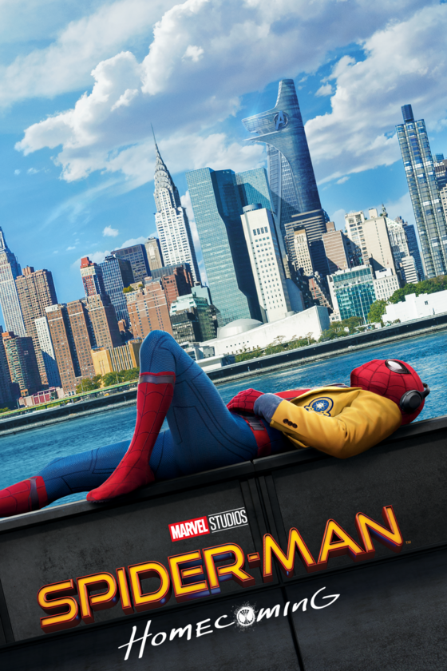
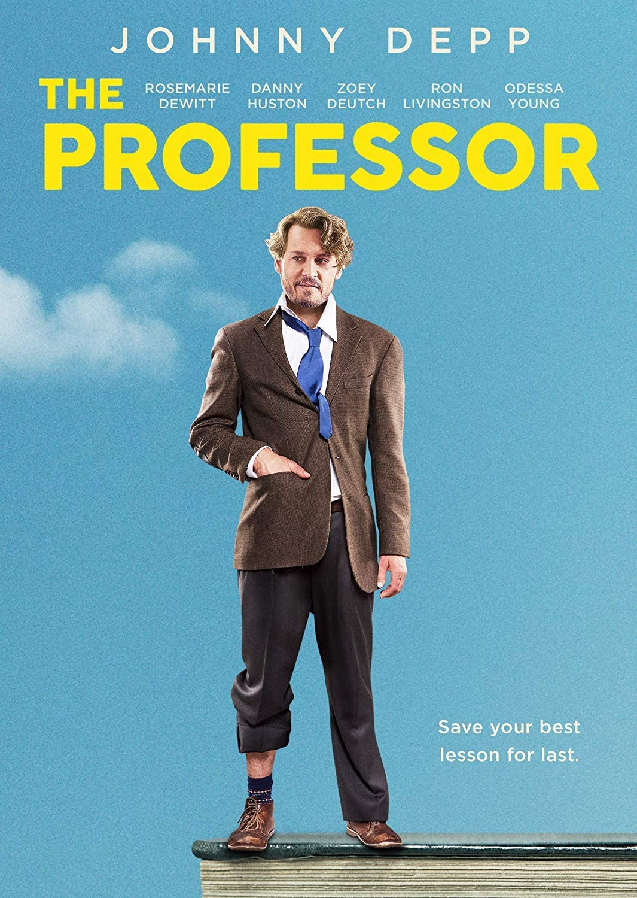
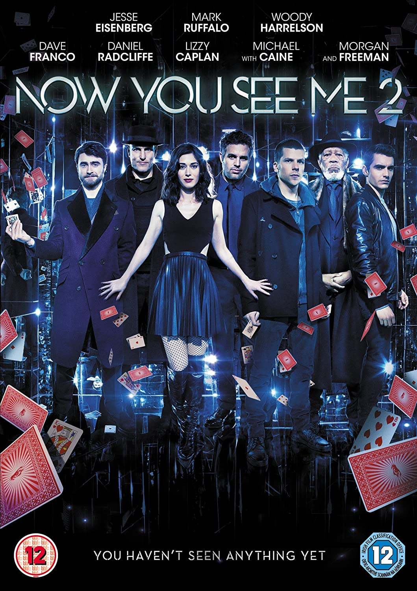
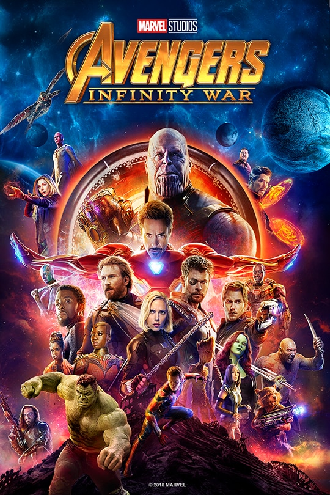
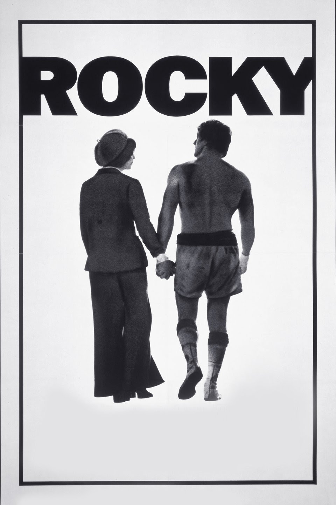

I decide to write somethings about movies:
Spider-Man:Homecoming (2017)
Following the Battle of New York, Adrian
Toomes and his salvage company are contracted
to clean
up the city, but their operation is taken over by the Department of Damage Control (D.O.D.C.), a
partnership between Tony Stark and the U.S. government. Enraged at being driven out of business,
Toomes persuades his employees to keep the Chitauri technology they have already scavenged and use
it to create and sell advanced weapons. Eight years later, Peter Parker is drafted into the Avengers
by Stark to help with an internal dispute in Berlin, but resumes his studies at the Midtown
School of Science and Technology when Stark tells him he is not yet ready to become a full Avenger.
Parker quits his school's academic decathlon team to spend more time focusing on his crime-fighting
activities as Spider-Man. One night, after preventing criminals from robbing an ATM with their
advanced weapons Toomes sold them, Parker returns to his Queens apartment, where his best friend Ned
discovers his secret identity. On another night, Parker comes across Toomes' associates Jackson
Brice / Shocker and Herman Schultz selling weapons to local criminal Aaron Davis. Parker saves Davis
before being caught by Toomes and dropped in a lake, nearly drowning after becoming tangled in a
parachute built into his suit. He is rescued by Stark, who is monitoring the Spider-Man suit he gave
Parker and warns him against further involvement with the criminals. Toomes accidentally kills Brice
with one of their weapons, and Schultz becomes the new Shocker.
Parker and Ned study a weapon Brice left behind, removing its power core. When a tracking device on
Schultz leads to Maryland, Parker rejoins the decathlon team and accompanies them to Washington,
D.C. for their national tournament. Ned and Parker disable the tracker Stark implanted in the
Spider-Man suit, and unlock its advanced features. Parker tries to stop Toomes from stealing weapons
from a D.O.D.C. truck, but is trapped inside, causing him to miss the decathlon tournament. When he
discovers that the power core is an unstable Chitauri grenade, Parker races to the Washington
Monument, where the core explodes and traps Ned and their friends in an elevator. Evading local
authorities, Parker saves his friends, including his classmate and crush Liz. Returning to New York
City, Parker persuades Davis to reveal Toomes' whereabouts. Aboard the Staten Island Ferry, Parker
captures Toomes' new buyer Mac Gargan, but Toomes escapes and a malfunctioning weapon tears the
ferry in half. Stark helps Parker save the passengers and confiscates his suit as punishment for his
recklessness.
Parker returns to his high school life, and eventually asks Liz to go to the homecoming dance with
him. On the night of the dance, Parker discovers that Toomes is Liz's dad. Deducing Parker's secret
identity from Liz's account about him, Toomes threatens retaliation if he continues to interfere
with his plans. During the dance, Parker realizes Toomes is planning to hijack a D.O.D.C. plane
transporting weapons from Avengers Tower to the team's new headquarters, dons his old homemade
Spider-Man suit, and races to Toomes' lair. Though he is ambushed by Schultz, he defeats him with
Ned's help. At the lair, Toomes destroys the building's support beams and leaves Parker to die.
Parker escapes the rubble and intercepts the plane, steering it to crash on the beach near Coney
Island. He and Toomes continue fighting, ending with Parker saving Toomes' life after the damaged
Vulture suit explodes, and leaving him for the police along with the plane's cargo. After her
father's arrest, Liz moves away, Parker declines an invitation from Stark to join the Avengers
full-time, and Stark proposes to Pepper Potts. He also returns the Spider-Man suit to Parker, who
puts it on in his bedroom just as his Aunt May walks in.
In a mid-credits scene, an incarcerated Gargan approaches Toomes in prison, saying he has heard that
the latter knows Spider-Man's real identity, which Toomes denies.
The Professor (2018)
College
English professor Richard Brown is in the office of his doctor and receives sad news concerning his
health. He has advanced stage cancer of his lungs, which has spread throughout his body with mortal
consequences. His life expectancy is set by the doctor as being six months without treatment, which
might be extended to 12–18 months with aggressive and painful cancer treatment. Richard is
devastated by the news, becoming self-abusive in verbal tirades against himself, and walking through
town and around campus as if in an emotional stupor.
Upon arrival at home for dinner, Richard decides to tell his wife, Veronica, and only daughter,
Olivia, the bad news and prepare them for the worst outcome possible. The dinner conversation,
however, takes unexpected turns. His daughter announces that she is a lesbian and that she has taken
a lover. Veronica dismisses her daughter as going through a phase, which causes Olivia to storm out
of the dining room, upset by her mother's lack of support. Richard's relationship with his wife is
troubled and tortured. Veronica confronts Richard with the fact that he has been a poor husband and
that she has taken a lover, the dean of the college where Richard teaches as part of the tenured
faculty in the English department. With everyone having argued at the dinner table, Richard never
gets to make his medical report of his crisis situation; when Veronica questions him about it, he
says that he was concerned that he had overcooked the steaks.
On campus the next day, Richard begins telling his students about the urgency of living life to its
fullest. He criticizes a number of stereotypes he superficially observes in the classroom and starts
weeding out the students whom he feels are there to only get easy good grades, or otherwise seek
cosmetic benefits from a friendly faculty. After over half of the potential classroom students leave
the class as being of no interest to them, Richard is left with a core group of students who seem
attracted to his unorthodox version of straight talk. They decide to stick with the class, and
Richard's newly proclaimed unorthodoxy. Among the students remaining is the niece of the college
dean, who seems to admire Richard for all his differences with her uncle since both of them, Richard
and her uncle, are members of the faculty in different departments.
Richard asks his friend, Peter Matthew, who happens to be his department's chairman, to arrange for
a sabbatical leave for him on immediate terms. The chairman tells him that it is impossible on such
short notice, but Richard continues to press him. Finally, Richard tells him that he is dying of
cancer and that he has no options but to request the immediate sabbatical leave. The chairman, who
considers Richard a close friend and colleague, says that he will try his best and tries to reassure
Richard as best as he can by way of some emotional support.
The classroom for Richard becomes a place for him to vent his frustration with life and to encourage
his young students not to fall into the traps and false career paths that he took in his own life.
The students are highly responsive, with one of the gay students offering Richard some pot brownies
and a sexual tryst in Richard's office. The dean's niece, on another occasion, asks Richard for a
slow romantic dance at a local club. Richard's reliance on alcohol and recreational drugs in these
passing days and weeks after receiving his bad news becomes progressively worse. In one instance, he
passes out and needs to be hospitalized because of his extreme intoxication.
As his final words to his students, and later to his colleagues, he stresses the importance of
seizing one's own existence. To truly acknowledge the fact that we are all going to die and
appreciate the (little) time we each have left.
After his bad news diagnosis, Richard becomes able to express warmth to his close family members and
remaining friends. He finally bonds with his daughter by accepting her coming out as a lesbian and
manages to at least partially patch things up with his wife during a frenzied and spontaneous drug
experimentation episode in their bedroom. The end, however, seems inevitable as Richard does not
take on the doctor's option of using chemotherapy to extend his life by a single year, and Richard
decides to leave his home and family on his final sabbatical leave, which has finally been approved
by his college. Richard decides to take the less-traveled path on his own, in his car, and with his
dog, in order not to be a burden upon his wife and daughter in his final months of life as his
cancer rapidly progresses.
Now You See Me 2 (2016)
Eighteen
months after outwitting the FBI, the fugitive Four Horsemen – J. Daniel Atlas, Merritt McKinney,
Jack Wilder, and new member Lula May – await orders from the Eye, the secret society of magicians.
The Horsemen’s handler, FBI Special Agent Dylan Rhodes, delivers their instructions: the Horsemen
are to expose corrupt tech CEO Owen Case, whose latest cell phone will secretly collect users’
personal data to sell on the black market. In New York City, the Horsemen hijack the phone’s launch,
but are interrupted by a mysterious figure who reveals to the public that Jack faked his death, and
that Dylan is working with the Horsemen. Dylan eludes the FBI as the Horsemen escape down a
construction chute only to find themselves in Macau.
They are captured by Chase, Merritt’s twin brother, and brought to Walter Mabry, Owen’s former
business partner. Having exposed the Horsemen in New York, Walter reveals how they were lulled
unconscious and flown to Macau. He explains that Owen took his company from him, as well as a chip
designed by Walter to access any computer system in the world. Despite the protests of the other
Horsemen, Daniel agrees to steal the chip for Walter before Owen can sell it. They acquire supplies
from a magic store owned by Li and Bu Bu, and arrange to deliver the chip to the Eye, knowing they
cannot trust Walter. Posing as potential buyers, they infiltrate the Macau Science Center, using
cardistry and sleight of hand to sneak the chip past its supervisor, Allen Scott-Frank.
Dylan is contacted by Thaddeus Bradley, the magic debunker he framed for the Horsemen’s crimes.
Thaddeus offers his help in finding the Horsemen, and Dylan extradites him from prison. They go to
Macau, and Dylan finds Daniel waiting to give the chip to the Eye. Walter arrives, having
manipulated Daniel into believing he was in contact with the Eye, and Dylan fights Walter’s men as
Daniel escapes with the chip. Captured, Dylan discovers Walter is the son of Arthur Tressler, whose
fortune Dylan and the Horsemen stole. Walter and Arthur lock Dylan in a safe and drop him
underwater, mirroring the death of Dylan’s father. Arthur pays Thaddeus for bringing him Dylan, and
Thaddeus promises to deliver the Horsemen as well. Dylan escapes from the safe and is rescued by the
Horsemen. Realizing the chip they have is a fake, they resolve to stop Walter from acquiring the
real chip, and are joined by Li and Bu Bu.
The Horsemen announce a new performance in London, with an implicit threat to expose Walter, who
flies to London with Arthur and Chase in a private jet. On New Year’s Eve, the Horsemen perform
across the city, but they and Dylan are captured by Walter’s men and brought to the jet. Once in the
air, they are forced to hand over the fake chip, which Walter confirms is real. Dylan and the
Horsemen are thrown out of the plane, which is revealed to be a set floating on the Thames. They
explain how they had misled the three into thinking they had won and reveal Jack had hypnotized
Chase into throwing them out of the plane as planned. Walter, Arthur, and Chase’s misdeeds are
broadcast to the crowd and around the world, and they are taken into FBI custody as Dylan and the
Horsemen escape before the FBI can apprehend them. They arrive at the Greenwich Observatory, where
they meet other members of the Eye, including Li, Bu Bu, and Allen. Their leader is revealed to be
Thaddeus, who explains to Dylan that he was actually his father’s partner in magic and was
pretending to be his rival this whole time. He appoints Dylan the new leader, and the Horsemen are
shown a secret entrance to see more of the Eye.
Avengers:Infinity War (2018)
Having acquired the Power Stone, one of the six
Infinity Stones, from the
planet Xandar, Thanos and his lieutenants—Ebony Maw, Cull Obsidian, Proxima Midnight, and Corvus
Glaive—intercept the spaceship carrying the survivors of Asgard's recent destruction. As they
extract the Space Stone from the Tesseract, Thanos subdues Thor, overpowers Hulk, and kills Loki.
Thanos also kills Heimdall after he sends Hulk to Earth using the Bifröst. Thanos and his
lieutenants depart, destroying the ship.
Hulk crash-lands in the Sanctum Sanctorum in New York City, reverting to the form of Bruce Banner.
He warns Stephen Strange and Wong about Thanos' plan to kill half of all life in the universe, and
they recruit Tony Stark. Maw and Obsidian arrive to retrieve the Time Stone from Strange, drawing
the attention of Peter Parker. Maw is unable to take the Time Stone due to an enchantment and
captures Strange instead. Stark and Parker sneak aboard Maw's spaceship while Wong stays behind to
guard the Sanctum.
In Edinburgh, Midnight and Glaive ambush Wanda Maximoff and Vision in order to retrieve the Mind
Stone in Vision's forehead. Steve Rogers, Natasha Romanoff, and Sam Wilson rescue them and they take
shelter with James Rhodes and Banner at Avengers Compound. Vision asks Maximoff to destroy him and
the Mind Stone to keep Thanos from retrieving it, but Maximoff refuses. Rogers suggests they travel
to Wakanda, which he believes has the resources to remove the Stone without killing Vision.
The Guardians of the Galaxy respond to a distress call from the Asgardian ship and rescue Thor, who
surmises that Thanos is currently going after the Reality Stone, which is in the possession of the
Collector on Knowhere. Rocket and Groot accompany Thor to Nidavellir, where they and Eitri create
Stormbreaker, a battle-axe capable of killing Thanos. On Knowhere, Peter Quill, Gamora, Drax, and
Mantis find Thanos with the Reality Stone already in his possession. Thanos kidnaps Gamora, his
adopted daughter, who reveals the Soul Stone is on Vormir in order to save her captive adopted
sister, Nebula, from torture. On Vormir, the Stone's keeper, Red Skull, tells Thanos that he can
only acquire it by sacrificing someone he loves. Thanos kills Gamora, earning the Stone.
Nebula escapes captivity and asks the remaining Guardians to meet her at Thanos' destroyed
homeworld, Titan. Stark and Parker kill Maw and rescue Strange. Landing on Titan, they meet Quill,
Drax, and Mantis. Strange uses the Time Stone to view millions of possible futures, seeing only one
in which Thanos loses. The group forms a plan to subdue Thanos and remove the Infinity Gauntlet,
which he uses to house the Stones. Thanos appears and justifies his plans as necessary to ensure the
survival of a universe threatened by overpopulation. Nebula arrives soon after, and helps the others
subdue Thanos until she deduces that Thanos has killed Gamora. Enraged, Quill attacks Thanos,
inadvertently allowing him to break the group's hold and overpower them. Thanos grievously wounds
Stark, but spares him after Strange surrenders the Time Stone to him.
In Wakanda, Rogers reunites with Bucky Barnes before Thanos' army invades. The Avengers, alongside
T'Challa and the Wakandan forces, mount a defense while Shuri works to extract the Mind Stone from
Vision. Hulk refuses to fight after losing to Thanos, so Banner fights in Stark's Hulkbuster armor.
Thor, Rocket, and Groot arrive to reinforce the Avengers. Midnight, Obsidian, and Glaive are killed
and their army is routed, but Shuri is unable to complete the extraction before Thanos arrives.
Maximoff destroys the Mind Stone and Vision, but Thanos uses the Time Stone to reverse her actions
and rips the repaired Mind Stone from Vision's forehead, killing him. Thor severely wounds Thanos
with Stormbreaker, but Thanos activates the completed Gauntlet by snapping his fingers before
teleporting away.
Half of all life across the universe disintegrates, including Barnes, T'Challa, Groot, Maximoff,
Wilson, Mantis, Drax, Quill, Strange, and Parker, as well as Maria Hill and Nick Fury, although Fury
is able to transmit an emergency signal on a modified pager.Stark and Nebula remain on Titan
while Banner, M'Baku, Okoye, Rhodes, Rocket, Rogers, Romanoff, and Thor are left on the Wakandan
battlefield. Meanwhile, Thanos watches a sunrise on a peaceful planet.
Rocky (1976)
In 1975, the heavyweight
boxing world
champion, Apollo Creed, announces plans to hold a title bout in Philadelphia during the upcoming
United States Bicentennial. However, he is informed five weeks from the fight date that his
scheduled opponent is unable to compete due to an injured hand. With all other potential
replacements booked up or otherwise unavailable, Creed decides to spice things up by giving a local
contender a chance to challenge him.
Creed selects Rocky Balboa, a journeyman southpaw boxer who fights primarily in small gyms and works
as a collector for a loan shark. Rocky meets with promoter George Jergens under the presumption that
Creed is seeking local sparring partners. Reluctant at first, Rocky eventually agrees to the fight
which will pay him $150,000. Rocky undergoes several weeks of unorthodox training, such as using
sides of beef as punching bags.
Rocky is later approached by Mickey Goldmill, a former bantamweight fighter who turned trainer and
whose gym Rocky frequents, about training him further. Rocky is not willing initially, as Mickey has
not shown much interest in helping him before and sees him as a wasted talent, but eventually
accepts the offer.
Meanwhile, Rocky begins to build a romantic relationship with Adrian Pennino, who is working
part-time at the J&M Tropical Fish pet shop, culminating in a kiss. Adrian's brother, Paulie, helps
Rocky get a date with his sister and even offers to work as a corner man with him. Paulie becomes
jealous of Rocky's success, but Rocky placates him by agreeing to advertise the meat packing
business for which Paulie works, as part of the upcoming fight. The night before the fight, a
sleepless Rocky visits the Philadelphia Spectrum and begins to lose confidence. He confesses to
Adrian that he does not believe he can win, but strives to go the distance against Creed, which no
other fighter has done, to prove himself to everyone; if he can go the distance, he won't be just
"another bum from the neighborhood."
On New Year's Day, the fight is held with Creed making a dramatic entrance dressed as George
Washington and then Uncle Sam. Taking advantage of his overconfidence, Rocky knocks him down in the
first round — the first time that Creed has ever been knocked down. Humbled and worried, Creed takes
Rocky more seriously for the rest of the fight, though his ego never fully fades. The fight goes on
for the full fifteen rounds, with both combatants sustaining various injuries. Rocky, with hits to
the head and swollen eyes, requires his right eyelid to be cut in order to restore his vision.
Apollo, with internal bleeding and a broken rib, struggles to breathe. As the fight concludes,
Creed's superior skill is countered by Rocky's apparently unlimited ability to absorb punches, and
his dogged refusal to go down. As the final round bell sounds, with both fighters locked in each
other's arms, they promise to each other that there will be no rematch.
After the fight, the sportscasters and the audience go wild. Jergens announces over the loudspeaker
that the fight was "the greatest exhibition of guts and stamina in the history of the ring", and
Rocky calls out repeatedly for Adrian, who runs down and comes into the ring as Paulie distracts
arena security. As Jergens declares Creed the winner by virtue of a split decision (8:7, 7:8, 9:6),
Adrian and Rocky embrace and profess their love to each other, not caring about the outcome of the
fight.